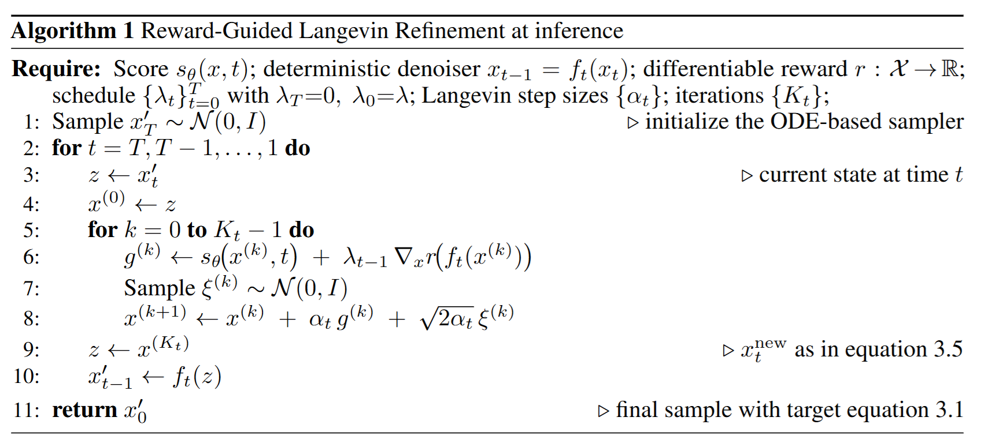
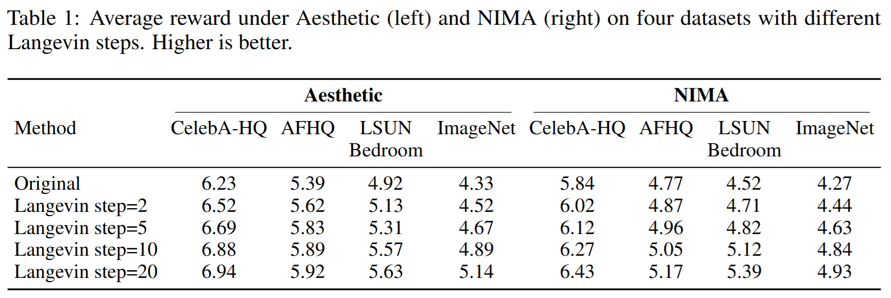
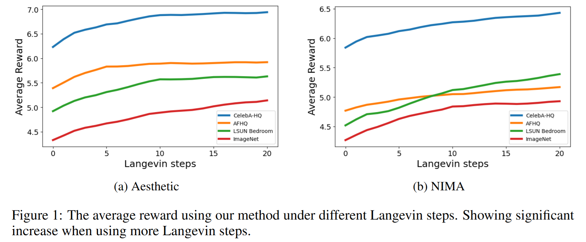
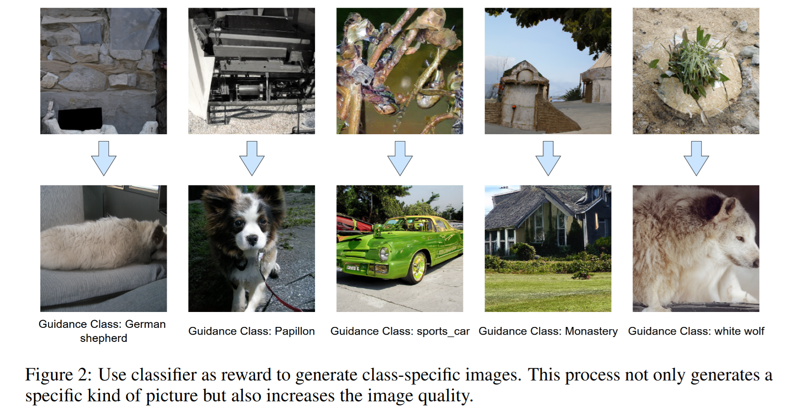

全文翻译
摘要
我们研究了基于常微分方程（ODE）采样器的预训练扩散模型在测试阶段与任务特定奖励的对齐问题。我们从受直接偏好优化（DPO）启发的基于能量的分布出发，提出了一种推理阶段朗之万细化方法：该方法在图像/ latent（潜变量）空间中，将标准的确定性去噪更新与奖励引导的修正交替进行。该流程对于常见的ODE求解器具有“即插即用”特性，无需额外训练或数据，且可适配任意可微奖励模型——包括人类偏好奖励模型、美学评分或安全性评分，以及基于CLIP的奖励模型。从实验结果来看，在多个数据集和不同奖励模型上，该方法在测试阶段均能持续提升奖励值。最终形成的是一种轻量级的“采样即对齐”方法：它能将预训练扩散模型转化为追求奖励的生成器，在无需微调数据、额外训练或架构修改的情况下提升生成质量。
1. 引言
近年来，去噪扩散模型迅速成为高保真图像生成的主流方法，在学术研究和工业应用中均取得了显著进展（Ho 等人，2020；Dhariwal & Nichol，2021；Rombach 等人，2022）。其优势的确立，得益于一个兼具卓越实际性能与坚实理论基础的框架。与其他生成范式不同，扩散模型建立在基于随机微分方程（SDE）的成熟公式之上（Song 等人，2020b）。这一视角提供了统一且规范的数学框架，巧妙地将前向加噪过程与反向生成过程（及其确定性概率流常微分方程对应形式（Song 等人，2020b），以及 DDIM（Song 等人，2020a）等高效常微分方程采样器）关联起来，带来了在其他模型中往往不够明确的理论保障与洞见。这种理论上的严谨性，再加上其在样本质量和多样性方面实现最先进结果的能力（Karras 等人，2022；Lu 等人，2022；Dhariwal & Nichol，2021），使得扩散模型成为图像生成领域最受欢迎的方法。
推进生成模型发展的一个关键方向，是让模型输出与细微的人类偏好对齐——不再局限于单纯的视觉保真度，而是延伸到美学质量、构图、伦理合规等属性。为此，越来越多的研究聚焦于利用人类反馈对生成模型进行微调。现有方法大致可按两个维度分类：反馈形式与训练范式。在反馈方面，部分方法利用人类直接提供的数据（如 pairwise 比较（Wallace 等人，2024）），另一部分则借助学习到的、包含人类偏好的奖励函数（Fan 等人，2023）。在训练范式方面，有些技术需要对模型进行全部或部分重训练（通常以强化学习（RL）的形式，通过优化去噪过程来最大化奖励信号（Fan 等人，2023；Clark 等人，2023））；另一些方法则通过蒸馏，将奖励引导过程中的知识迁移到模型参数中（Salimans & Ho，2022）。与之相对，还有一类截然不同的研究思路聚焦于推理阶段：不更新预训练模型的权重，而是利用来自分类器或奖励模型的引导信号来调控生成过程（Dhariwal & Nichol，2021；Ho & Salimans，2022）。尽管这类方法具有一定效果，但往往需要在控制强度与样本质量之间进行权衡。
在本研究中，我们提出了一种无需训练的推理阶段框架，可将基于确定性常微分方程（ODE）的扩散采样器与任意可微奖励函数对齐。在每一步采样过程中，我们先执行一个针对“拉回能量倾斜”的简短朗之万细化（该概念源于基于能量的模型（LeCun 等人，2006；Du 等人，2023）），随后再应用确定性去噪器，将细化后的状态推进到下一步。这种交替执行的设计带来了简洁且可组合的理论保障：下一步的分布会实现预期的奖励指数倾斜，而通过多步迭代，最终能恢复出类似 DPO（直接偏好优化）形式的基于能量的目标分布（Wallace 等人，2024），从而与直接偏好优化（Direct Preference Optimization）的原理建立了形式化关联（Rafailov 等人，2023）。我们的方法具有“即插即用”特性，不依赖特定架构，且可适配多种奖励模型（如美学评分（Fan 等人，2023）、NIMA（Talebi & Milanfar，2018）、基于分类器的类别引导（Dhariwal & Nichol，2021）），能在推理阶段完全实现实用化的偏好对齐——这与那些需要微调（Fan 等人，2023；Clark 等人，2023）或训练奖励模型（Rafailov 等人，2023；Wallace 等人，2024）的方法形成了鲜明对比。
综上，本文的主要贡献如下：
- 无需训练的推理阶段框架：提出了一种面向基于确定性常微分方程（ODE）的扩散采样器、由奖励引导的无需训练的推理阶段微调框架，将简短的朗之万细化与模型的确定性去噪器交替执行。
- 理论保障：通过严格证明表明，我们的分层细化与确定性推进过程，能让每一层都实现预期的指数倾斜分布，最终在输出端形成类似 DPO 的倾斜分布，从而验证了该框架的正确性。
- 实验有效性：大量实验表明，我们的方法在不同数据集和奖励模型上均能持续提升预期奖励值；此外，将分类器的 logit 值作为奖励，还能在不更新参数的情况下，实现推理阶段的类别引导图像生成。
2 预备知识
2.1 扩散模型的前向过程与反向过程
我们考虑在有限时间域[0, T]内、定义在$T^d$（d维环面）上的前向加噪伊藤随机微分方程（SDE）：
其中，$f(\cdot, t)$为漂移场，$g(t)>0$为标量（或各向同性）扩散调度，$W_{t}$为标准维纳过程（Wiener process）。用$p_{t}$表示由公式（2.1）诱导的$x_{t}$的边缘概率密度。
将服从分布$x_{T} \sim p_{T}$的样本反向映射回服从分布$x_{0} \sim p_{0}$的样本的反向时间SDE（即反向过程SDE）可表示为：
其中，$\bar{W}_{t}$为反向时间下的标准维纳过程，$\nabla_{x} \log p_{t}$为（未知的）得分函数（score function）。
上述反向过程对应的确定性形式为概率流（反向）常微分方程（ODE），当得分函数精确时，该ODE与反向SDE具有相同的时间边缘分布，其表达式为：
在实际应用中，我们会用预训练的得分模型$s_{\theta}(x, t) \approx\nabla_{x} \log p_{t}(x)$替代公式（2.2）和公式（2.3）中的未知得分函数；对公式（2.3）进行数值离散化，即可得到基于确定性ODE的去噪采样器（例如DDIM（Song等人，2020a）、EDM风格的积分器（Karras等人，2022））。
2.2 作为SDE的朗之万动力学及其离散化
给定目标概率密度$\pi(x) \propto e^{-U(x)}$（其中$U: \mathbb{R}^{d} \to \mathbb{R}$为能量函数），过阻尼朗之万SDE（单位温度下）可表示为：
其中，$B_{\tau}$为标准布朗运动（Brownian motion）。在温和条件（如能量函数$U$具有约束性）下，该SDE对应的福克-普朗克方程（Fokker–Planck equation）$\partial_{\tau} q_{\tau}=-\nabla \cdot (q_{\tau} \nabla \log \pi)+\Delta q_{\tau}$以$\pi$为平稳分布（Pavliotis，2014）。
该朗之万SDE的一种基础时间离散化方法是无调整朗之万算法（Unadjusted Langevin Algorithm，ULA）（Robert & Tweedie，1996；Parisi & Yongshi，1980），其更新公式为：
其中，$\alpha$为步长，$\xi$为服从标准正态分布的随机噪声。当$\alpha \to 0$且迭代次数足够多时（或通过Metropolis校正可实现精确收敛），ULA算法的输出会收敛到目标分布$\pi$。
2.3 类RLHF目标函数与DPO：诱导的能量倾斜最优解
设$p_{\theta}(x_{0})$为图像$x_{0}$上的参数化无条件生成模型，$p_{\text{ref }}(x_{0})$为固定的参考分布（例如预训练模型的分布）。基于人类反馈的强化学习（RLHF）的目标是最大化潜在奖励$r(x_{0})$，同时正则化模型分布与参考分布$p_{\text{ref }}$之间的KL散度（Ziegler等人，2019；Stiennon等人，2020），其目标函数可表示为：
对于公式（2.6）所示的目标函数，其（唯一的）全局最优解具有能量倾斜形式的闭合表达式：
其中，$Z$为归一化常数。
推导过程
引入用于归一化约束的拉格朗日乘数$\lambda$，对目标泛函：
关于$p$求导并令导数为0，可得：
整理后得到$\log p(x_{0})=\log p_{\text{ref }}(x_{0})+r(x_{0}) / \beta-C$（其中$C$为常数）。对等式两边取指数并进行归一化，即可得到公式（2.7）。
基于能量的视角
公式（2.7）可视为一种基于能量的模型（Energy-Based Model，EBM），其能量函数为$E(x_{0})=-\log p_{\text{ref }}(x_{0})-r(x_{0}) / \beta$。因此，优化公式（2.6）所示的RLHF目标函数，等价于从如下基于能量的模型族中采样：$p(x_{0}) \propto p_{\text{ref }}(x_{0}) \exp (r(x_{0}) / \beta)$。
2.4 基于ODE的扩散模型：确定性去噪
我们采用基于确定性ODE的采样器（例如对概率流ODE进行DDIM/EDM风格积分的采样器），该采样器会生成离散时间的去噪轨迹，其表达式为：
其中，$f_{t}$为去噪函数，$t$为采样步数（从$T$到1逐步迭代）。
用$p_{t}$表示第$t$步（layer t）时模型诱导的$x_{t}$的边缘分布。由于$f_{t}: \mathbb{R}^{d} \to \mathbb{R}^{d}$是可微的且在支撑集上局部可逆，因此各步的概率密度满足变量替换恒等式：
其中，$\det \nabla f_{t}(x)$表示$f_{t}(x)$梯度的雅可比行列式的绝对值。
由此可知，一旦初始采样$x_{T} \sim p_{T}$（通常为标准正态分布）确定，整个采样轨迹$\{x_{t}\}$就会由公式（2.10）完全确定；也就是说，给定$x_{T}$，后续所有步骤的$x_{T-1}, \ldots, x_{0}$都会被唯一确定。
3 方法
最终目标
受直接偏好优化（DPO）闭式解的启发，我们旨在将$t=0$时刻（即最终输出时刻）的分布倾斜为如下基于能量的模型分布：
其中，$r: X \to \mathbb{R}$代表（可微的）奖励函数，$\lambda>0$为全局奖励强度参数。
分步目标
为逐步实现公式（3.1）所示的最终目标，我们引入一个递减的奖励强度调度策略：
并定义第$t$步（layer t）的倾斜分布为：
已知当前时刻$t$的样本$x_{t}’ \sim p_{t}^{(\lambda_{t})}$，我们通过以下两步操作生成下一时刻$t-1$的样本$x_{t-1}’ \sim p_{t-1}^{(\lambda_{t-1})}$：
步骤1：朗之万细化
从时刻$t$的样本$x_{t}’$出发，执行若干步朗之万迭代，目标分布为：
最终得到细化后的样本：
针对目标分布$\pi_{t}$的连续时间朗之万随机微分方程（SDE）为：
该分布的对数梯度为：
其中，$s_{\theta}(x, t)$为预训练的得分模型。
以当前时刻$t$的状态为初始值：
随后执行$K_{t}$步无调整朗之万算法（ULA），步长为$\alpha_{t}>0$，迭代更新公式为：
其中，高斯噪声满足：
在噪声极低的采样步骤中，可采用无噪声版本的迭代更新公式：
经过$K_{t}$次迭代后，定义细化后的样本为：
当步长$\alpha_{t}$足够小且迭代次数$K_{t}$足够多时，细化后的样本$x_{t}^{\text{new }}$会满足公式（3.5）所示的分布。
步骤2：确定性去噪
已知细化后的样本$x_{t}^{\text{new }}$满足公式（3.5），将其输入确定性去噪器，得到：
通过变量替换可知，该操作会使下一时刻的样本满足预期的倾斜分布：
证明过程
由公式（3.5）可知，$X’ \equiv x_{t}^{\text{new }}$的概率密度为$\tilde{\pi}_{t}(x) \propto p_{t}(x) \exp (\lambda_{t-1} r(f_{t}(x)))$。令$Y=f_{t}(X’)$，对于任意可测集$A \subset \mathbb{R}^{d}$，有：
结合变量替换关系$p_{t}(x)=p_{t-1}(f_{t}(x)) \left| \det \nabla f_{t}(x) \right|$与变量替换$y=f_{t}(x)$，可得：
其中$Z$为归一化常数。因此，$Y$的概率密度为$\tilde{\pi}_{t-1}(y) \propto p_{t-1}(y) \exp (\lambda_{t-1} r(y))$，即公式（3.14）所示的分布。
归纳推导
假设在第$t$步时，样本满足$x_{t}’ \sim p_{t}(x) \exp (\lambda_{t} r(x))$，则通过执行步骤1（朗之万细化）和步骤2（确定性去噪），可生成满足$x_{t-1}’ \sim p_{t-1}(x) \exp (\lambda_{t-1} r(x))$的样本。对$t=T, \ldots, 1$的所有步骤迭代执行上述操作，最终可得：
该分布与公式（3.1）所示的DPO最优基于能量的分布完全一致。
基于上述推导，我们将所提方法总结为如下算法。

4 实验
4.1 实验设置
基础模型与采样器
我们采用预训练的扩散模型作为基础模型，并搭配基于确定性常微分方程（ODE）的采样器（例如DDIM/EDM概率流采样器），将采样过程离散化为从$t=T$到$t=0$的$T=50$个步骤。
数据集
我们在4个256×256分辨率的无条件生成数据集上进行评估，分别是CelebA-HQ（Karras等人，2017）、AFHQ（包含猫/狗/野生动物子数据集）（Choi等人，2020）、LSUN卧室（Yu等人，2015）和ImageNet（Deng等人，2009）。所有数据集均使用其标准训练集划分，并采用扩散模型基础训练时的标准预处理流程。
奖励模型（可微）
我们采用两种可微奖励模型，具体如下：
- 美学评分（LAION美学预测器v2）：以CLIP图像编码器（ViT-L/14）（Radford等人，2021）为基础，后续连接一个线性回归头，用于预测标量美学分数（Schuhmann等人，2021）。在评分前，图像会被缩放到224×224分辨率，并采用CLIP标准归一化流程；该缩放操作具有可微性，梯度可反向传播至原始256×256分辨率图像。
- NIMA（神经图像评估）：我们使用标准NIMA模型，输入图像通过双线性插值缩放到224×224分辨率并进行裁剪处理。
为确保实验公平性与可复现性，所有数据集上的两种奖励模型均保持冻结状态（不进行微调）。为提升奖励组合时的稳定性，两种奖励模型的输出分数均被归一化到[0, 10]区间。
奖励调度与引导
我们遵循公式（3.2）和（3.4）中定义的分步目标，采用如下奖励强度调度策略：$\lambda_T=0$、$\lambda_0=\lambda$且$\lambda_{t-1} \geq \lambda_t$。除非另有说明，否则我们设置$\lambda_{t-1}=\lambda \cdot w_t$，其中$w_t$为余弦衰减权重，计算公式为：
由此可得$w_1=1$、$w_T=0$。
朗之万细化
在每个时间步$t$，我们执行$K_t \in \{2,5,10,20\}$步无调整朗之万算法（ULA），迭代更新公式为：
通过该设置，可观察不同朗之万细化步数对所提方法生成图像的预期奖励值的影响。
实现细节
生成的图像分辨率为256×256，在输入奖励模型前，需通过可微缩放操作调整至224×224分辨率。在细化过程中，我们确保端到端梯度传播始终启用（无意外的梯度禁用或得分函数梯度分离情况）。对于每个数据集，我们生成2000张图像用于计算平均奖励值。
4.2 主要结果
在所有4个256×256分辨率数据集以及两种可微奖励模型（美学评分和NIMA）上，随着朗之万细化步数的增加，我们的方法生成图像的预期奖励值呈现单调递增趋势。关键在于，即使仅执行2步朗之万细化，也能实现显著的奖励提升：在美学评分指标下，CelebA-HQ数据集的分数从6.23提升至6.52（+0.29）、AFHQ数据集从5.39提升至5.62（+0.23）、LSUN数据集从4.92提升至5.13（+0.21）、ImageNet数据集从4.33提升至4.52（+0.19）；在NIMA指标下，CelebA-HQ数据集从5.84提升至6.02（+0.18）、AFHQ数据集从4.77提升至4.87（+0.10）、LSUN数据集从4.52提升至4.71（+0.19）、ImageNet数据集从4.27提升至4.44（+0.17）。
 |
|---|
| 表 1：不同朗之万步数下，四种数据集在美学评分（左）和 NIMA 评分（右）指标下的平均奖励值。分数越高越好。 |
当朗之万细化步数设置为20时，奖励提升效果更为显著：美学评分指标下，ImageNet数据集分数从4.33提升至5.14（+0.81）、LSUN数据集从4.92提升至5.63（+0.71）、CelebA-HQ数据集从6.23提升至6.94（+0.71）、AFHQ数据集从5.39提升至5.92（+0.53）；NIMA指标下，LSUN数据集从4.52提升至5.39（+0.87）、ImageNet数据集从4.27提升至4.93（+0.66）、CelebA-HQ数据集从5.84提升至6.43（+0.59）、AFHQ数据集从4.77提升至5.17（+0.40）。
图1显示，随着朗之万细化步数的增加，生成图像的平均奖励值显著上升。总体而言，我们提出的推理阶段细化方法能在不同数据集上稳定提升预期奖励值，且趋势具有一致性。
 |
|---|
| 图 1：不同朗之万步数下所提方法的平均奖励值。结果表明，随着朗之万步数的增加，平均奖励值显著上升。 |
（注：图1标题为“不同朗之万步数下所提方法的平均奖励值”，子图（a）对应美学评分奖励，子图（b）对应NIMA奖励，纵轴为平均奖励值，横轴为朗之万步数，可直观观察到奖励值随步数增加的上升趋势）。
4.3 基于所提方法的类别引导生成
在不修改扩散模型参数的前提下，我们的方法还可利用冻结的图像分类器作为奖励来源，在推理阶段实现类别引导，生成特定类别的图像。具体而言，我们将分类器对目标类别的置信度（例如类别logit值或对数概率）作为可微奖励，代入分层细化与确定性推进流程中。这种方式能实现类别选择性引导，使生成样本偏向目标类别，同时保持基于ODE采样器的稳定性与可控性。
在实际操作中，我们仅需将生成的图像通过可微双线性插值缩放到分类器的原生输入分辨率，并采用分类器的标准归一化流程，即可计算标量奖励，无需任何再训练步骤。此外，将分类器作为奖励引导源，不仅能实现特定类别图像生成，还能提升生成图像的质量。图2（基于256×256分辨率ImageNet数据集）展示了该方法的有效性。
 |
|---|
| 图2：以分类器作为奖励生成特定类别图像。该过程不仅能生成特定类型的图片，还能提升图像质量。 |
（注：图2标题为“以分类器为奖励生成特定类别图像”，展示了5个目标类别的生成结果，分别是德国牧羊犬、蝴蝶犬、跑车、修道院、白狼，可直观观察到生成图像既符合目标类别特征，又具有较高视觉质量）。
5 相关工作
扩散模型与确定性ODE采样
高效采样一直是扩散模型研究的核心主题。一项关键进展源于将扩散模型表述为随机微分方程（SDE）的解，这一表述自然地引出了其确定性对应形式——概率流常微分方程（Probability Flow ODE）（Song等人，2020b）。这种表述支持确定性采样，即生成过程由唯一轨迹定义，能够实现有意义的潜变量插值和精确的可复现性。
Song等人提出了去噪扩散隐式模型（Denoising Diffusion Implicit Model，DDIM）采样器，这是一种一阶求解器，在保持生成质量的同时大幅加快了采样速度（Song等人，2020a）。后续研究则聚焦于开发更复杂的ODE求解器。例如，Karras等人（2022）通过实证阐明了基于ODE采样的设计选择，形成了稳健的实践方案；Lu等人（2022）提出了DPM-Solver，这是一种针对扩散ODE特定结构设计的高阶求解器，仅需约10步即可实现高保真度生成。
除求解器设计外，另一类研究方向（如渐进式蒸馏（Progressive Distillation）（Salimans & Ho，2022））旨在将复杂ODE求解器的行为蒸馏到更高效的模型中，进一步突破采样速度的限制。这些努力共同确立了确定性ODE采样作为扩散模型强大且高效的范式。
扩散模型的引导方法
控制扩散模型的输出以使其与人类偏好对齐（这一挑战在语言模型中常通过基于人类反馈的强化学习（RLHF）解决），在图像领域也取得了并行进展。早期研究聚焦于推理时引导：Dhariwal与Nichol（2021）开创了分类器引导（Classifier Guidance）方法，利用预训练分类器的梯度将采样过程导向期望属性；随后，无分类器引导（Classifier-Free Guidance）方法取而代之，这种更稳健且应用广泛的技术通过联合训练条件与无条件模型实现控制，无需辅助分类器（Ho & Salimans，2022）。
近年来，研究开始探索将人类反馈直接融入模型训练循环，与RLHF范式相呼应。部分方法通过奖励梯度直接微调扩散模型（Clark等人，2023）；另一些方法（如DPOK）则将去噪过程形式化为序贯决策问题，并应用策略梯度算法（Fan等人，2023）。为规避强化学习的复杂性，DiffusionDPO等方法将直接偏好优化（Direct Preference Optimization）技术适配到扩散模型中，无需显式奖励模型即可高效实现与人类偏好的对齐（Wallace等人，2024）。
从推理时引导到训练时对齐，这些研究方向对于开发可控且符合伦理的生成模型至关重要。
6 结论
本文提出了“奖励引导朗之万细化”（Reward-Guided Langevin Refinement）方法，这是一种推理阶段框架，能够在不更新模型参数的情况下，将基于确定性常微分方程（ODE）的扩散采样器与任意可微奖励函数对齐。我们的核心思路是，在采样的每一步中，交替执行针对“拉回能量倾斜”的简短朗之万细化操作，以及确定性去噪推进操作。
我们提供了两个简洁且可组合的理论保障：（i）朗之万细化操作会从分层倾斜分布$p_{t}(x) \exp (\lambda_{t-1} r(f_{t}(x)))$中采样；（ii）确定性推进操作$x_{t-1}=f_{t}(x_{t})$会将该倾斜分布精确转化为$p_{t-1}(x) \exp (\lambda_{t-1} r(x))$。通过采用递减的奖励强度调度策略，在多步采样中迭代执行上述操作，最终的输出分布会实现类似直接偏好优化（DPO）的指数倾斜形式，从而在推理阶段完全实现偏好对齐。
实验结果表明，我们的方法在不同数据集和多种奖励模型（美学评分、NIMA评分以及基于分类器的类别引导）上，均能持续提升预期奖励值，同时在相同的实际耗时下保持生成样本的保真度。值得注意的是，仅需2步朗之万细化就能带来显著的奖励提升，而20步朗之万细化可实现更为明显的效果，这体现出该方法在奖励提升与效率之间具有良好的权衡特性。
局限性
我们的方法由于引入了朗之万动力学操作，会增加推理阶段的计算开销。使用的朗之万细化步数越多，生成图像的预期奖励值固然会越高，但也会导致生成时间延长。此外，生成图像还会继承所选奖励模型本身存在的偏差。
未来工作
除了在推理阶段实现对齐之外，我们的框架还有望作为一种诊断工具，用于分析奖励函数本身的特性。由于我们的方法在沿奖励梯度提升奖励值的同时，仍能保留规范的扩散去噪步骤，因此可提供一种可控的方式来检测奖励函数是否存在“可被欺骗”的问题——即能否以极小的语义改进（甚至产生不良伪影）为代价，实现奖励值的大幅提升。此外，我们的方法或许还可作为一种通用工具，在负责任的使用协议下对奖励模型进行“红队测试”（red-teaming），帮助设计者优化奖励函数定义、提升奖励模型的校准度，并降低其受奖励欺骗的可能性。
Review
Summary
本文提出了一种适用于推理阶段的无需训练朗之万细化方法，将基于ODE的扩散采样器与任意可微奖励函数对齐。该方法通过交替地使用标准的确定性去噪更新步骤和 Langevin 奖励引导修正步骤，在采样时进行偏好或目标引导的生成，并且作者在文章中证明了所提出的方法可以逐步恢复 DPO 式指数倾斜目标分布。此外，在多个图像数据集和奖励模型上的结果表明了一致的改进，并且定性结果证明仅使用分类器作为奖励可以有效的引导图像生成特定的类别。
Strengths
所提出的框架引入了一种无需训练的推理时间奖励引导细化机制，可与任意标准扩散 ODE 求解器和可微奖励函数兼容，具有广泛的适用性。
文章提出的Reward-Guided Langevin Refinement方法不依赖于特定的预训练模型，并且可以结合不同的奖励模型，有助于进一步探索Reward-Guided Langevin Refinement的性能
文章提出方法的有效性在数学层面得到证明，最终得到的迭代结果符合直接偏好优化（DPO）形式的最优输出分布。
Weaknesses
正如文章中所提到的，生成图像会继承所选奖励模型本身存在的偏差，若奖励模型在训练过程中存在数据偏差、标注错误或者设计不合理等问题，生成的图像也将难以符合预期。
所提出的方法仅讨论了无条件生成的改进情况，而对有引导条件生成的改进情形则没有被讨论。
尽管该方法是无需训练的，但需要在每隔去噪步骤中增加多个 Langevin 细化步骤（每个去噪步骤可能多达 20 个），并且每一个Langevin 细化步骤都需要调用一次预训练的扩散模型和一次预训练的奖励模型，在相同的去噪步数下带来额外的计算成本。
实验结果只提供了相对于基线的改进情况，但没有涉及与其他无需训练方法在相同推理资源下的效果对比。
实验没有提供标准生成模型指标（例如 FID、精确度/召回率或覆盖率）的报告来评估引入的奖励增益是否以感知质量降低或者多样性为代价。
Questions
文章实现过程中是否使用了大模型作为辅助？为什么章节里没有介绍大模型的使用情况？
从公式(3.9)和算法1来看，每一次 Langevin 细化 都需要调用一次预训练的扩散模型和一次预训练的奖励模型，可否提供在相同的计算成本下，使用 Langevin 细化和不适用 Langevin 细化的结果对比？
可否提供更多完整的实验结果，以展示生成图像的FID、精确度/召回率或覆盖率的改进情况？